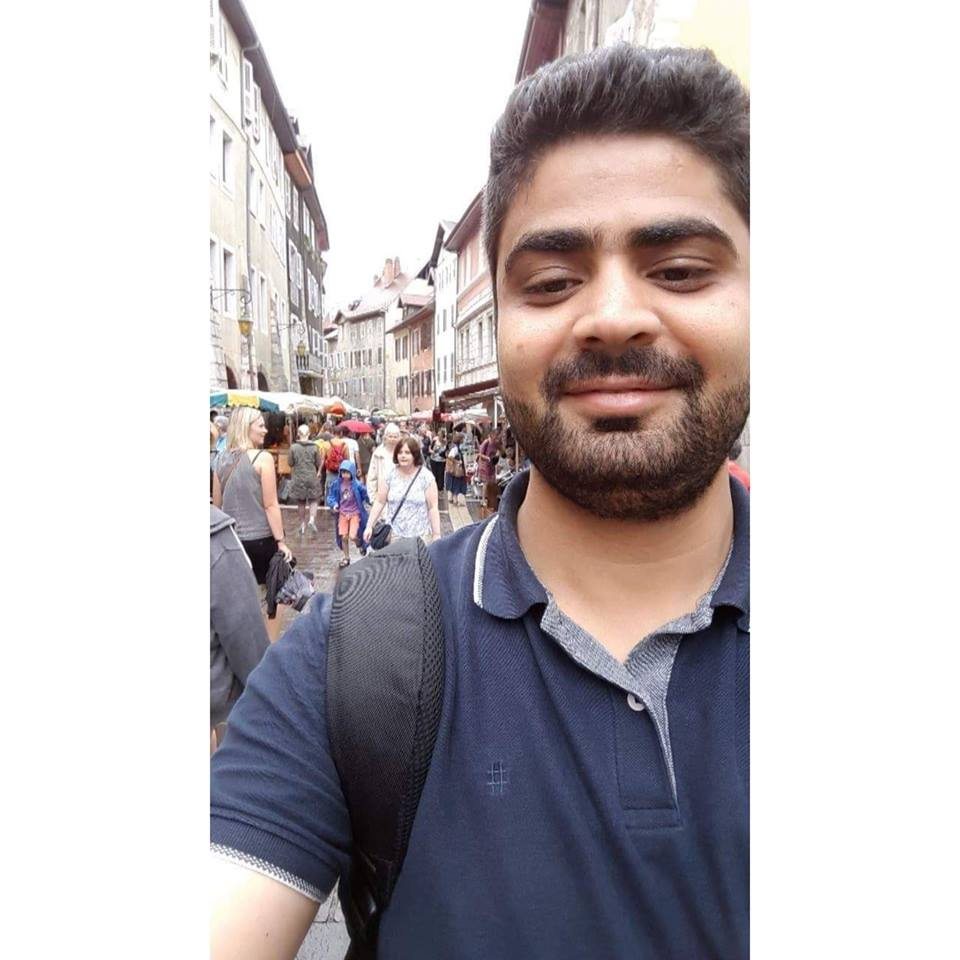

Omar Qawasmeh
PhD | Artificial intelligence (Semantic web and Natural language processing)In September 2020, I got my Ph.D. degree in computer science, in artificial intelligence from Université de Lyon-France (thesis domain : AI, semantic web).
Currently, I'm a Data Scientist at Hybrid Intelligence- Capgemini Engineering group at Lyon, France.
Publications can be found at: Google scholar ,
and Researchgate
Detailed CV: in English ,
or in French (upon request)
Research statment: in English (upon request)
September 26, 1991
BIRTH
French- Jordanian
NATIONALITY
Arabic (NATIVE), English (FULL PROFESSIONAL PROFICIENCY), and French (DELF B1)
LANGUAGES
Education
Dec 2016 - Sep 2020
PhD in computer science
Thesis title: Towards A Collaborative Framework for Ontology Engineering: Impact on Ontology Evolution and Pitfalls in Ontology Networks and Versioned Ontologies
Defended successfully on 25/09/2020.
University of Lyon
France
Thesis supervisors: Prof. Pierre Maret , Dr. Maxime Lefrançois , and Dr. Antoine Zimmermann .
Feb 2014 - Sep 2016
MSc in computer science
Thesis title: Hybrid approach for event extraction from arabic tweets
Defended successfully on 24/05/2016
Jordan University of Science and Technology
Jordan
Thesis supervisor: Dr. Mohammad AL-Smadi
Sep 2009 - Feb 2014
BSc in computer science
Thesis title: Optical character recognition: a mobile application for capturing and managing medicines
Defended successfully on 13/01/2014
Jordan University of Science and Technology
Jordan
Thesis supervisor: Dr. Mahmoud ALshbool
Work Experience
March 2021- now
Data Scientist
Hybrid Intelligence-Capgemini Engineering
Lyon, France
January 2021 - March 2021
Data Scientist
Nextra Partners Advanced Technologies
Marseille, France
Feb 2020 - December 2020
Research and development engineer (Semantic web technologies)
École Nationale Supérieure des Mines de Saint-Étienne
Saint-Etienne, France
Dec 2016- Dec 2019
Doctoral reseacher in semantic web technologies
Laboratoire Hubert Curien
Saint-Etienne, France
Oct 2017 - Nov 2017
Invited visitor
Fraunhofer-Institut für Intelligente Analyse- und Informationssysteme Fraunhofer IAIS | Schloss Birlinghoven
Sankt Augustin, Germany
2014- 2015
RESEARCHER IN NATURAL LANGUAGE PROCESSING DOMAIN
Jordan University of Science and Technology
Irbid, Jordan